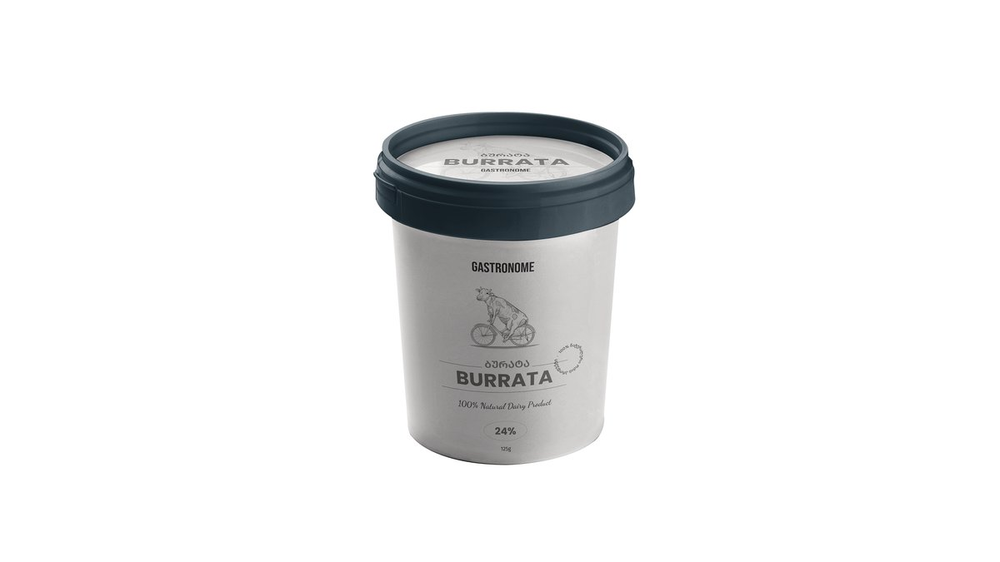

#1
Буррата 125 г
Gastronome- ბურატა 125გრ
Gastronome Batumi
белое / легкое красное
2 порции
12.90 GEL за позицию
25.80 GEL
Самый прямой легкий вариант к вину: мягкий сыр, можно добавить томаты или хлеб.
Открыть позицию в Wolt